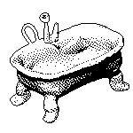

★ ★ ★ ★ Look At All This Stuff ★ ★ ★ ★

Title: Thinking Matters
Medium: HTML/CSS
Wednesday, April 4 2018
This website was created using a compilation of images I have created and some that I found on the Internet. I started this web page by creating the central hub where the user can navigate to random .gifs and see strange things. The clay animation .gifs were created by Mason Lindroth and are from his game called Hylics. I was inspired by his game to create a very strange atmosphere for the user. I learned much coding from W3schools and also Stackoverflow. I looked through many forums to find out how to make certain parts of this project. My main concept for this projects is to give the feeling of curiosity and interest to see more. I want the user to be confused and off put by some of the things they see.